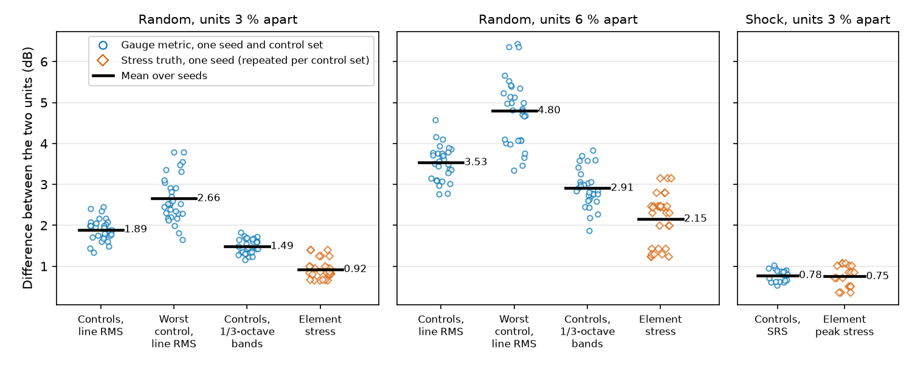
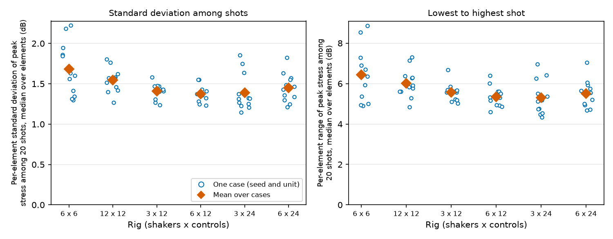

Hertzforge Journal
What Is a Good Multi-Shaker Test? A Proposed Practice for Judging MIMO Vibration and Shock Tests on Flexible Articles
Proposed Standard
The authors of this article are the journal's editors. Its reviewers are drawn from outside the author list.
EvidenceSimulator. Published sources, and simulations of one family of linear frame models with idealized control (Section 4.1). No hardware tests.
Abstract
A single-shaker vibration test is accepted when one control accelerometer follows its target spectrum, which says little about what the article itself experienced. For tests with several shakers there is no agreed way to judge a test at all, and the standards say so. This article proposes one. Its starting point, seen in a published hardware test and in simulations where the stress in every part of the article is known, is that a small error at the control accelerometers does not mean a good test. A controller sets the shaker drives so that the control accelerometers read their targets. With as many shakers as controls it can make them read their targets almost exactly, whatever the rest of the article is doing: in the simulations it held every control within a tenth of a decibel of its target while stressing the article more than 10 dB above what it sees in service. Accelerometers left out of the control showed the problem; the controls did not. With fewer shakers than controls, the error left at the controls does follow how well the article is being tested. The proposals are to keep some accelerometers out of the control and use them to check the test; to report separately what the setup could reach, what the controller achieved and what the article saw; to hold the overall level tightly and the shape of the spectrum loosely; to compare spectra in frequency bands; to state the margin added where a test must not under-test; and to judge a controller by its safety and by whether it reaches what the setup can reach. The evidence is published work and simulations of one family of linear structures, with no new hardware tests; the proposed numbers are starting values, to be tried and revised.
Summary
A vibration test on a single shaker is judged by one accelerometer, the control, mounted on the fixture. If the control follows its target spectrum, the test is accepted. That says little about what the part itself experienced, and test engineers know it.
Tests with several shakers, controlled from accelerometers on the article itself, were meant to fix this. They raise a question nobody has settled: what makes a multi-shaker test good? The standards say they do not have an answer.
The usual answer is to look at the controls. If every control accelerometer is close to its target, the test is called good. Here the error at a point means how far the vibration measured there is from its target, in decibels. A controller adjusts the shaker drives until the control accelerometers read what they should. With as many shakers as control accelerometers, it can make them read almost exactly right, whatever the rest of the article is doing.
In the simulations reported here, a controller with as many shakers as controls held every control accelerometer within a tenth of a decibel of its target, and the article was stressed more than 10 dB above what it sees in service. Nothing at the controls showed it. Accelerometers mounted on the article but left out of the control did show it. A hardware test published by Sandia National Laboratories found the same thing.
A small error at the control accelerometers does not mean a good test. With fewer shakers than controls, the controller cannot make every control exact, and the error left at the controls does follow how well the article is being tested. With as many shakers as controls, it does not.
This article proposes a way to judge multi-shaker tests:
- keep some accelerometers out of the control and use them only to check the test;
- report separately what the setup could reach, what the controller achieved and what the article saw;
- hold the overall level tightly and the shape of the spectrum loosely;
- compare spectra in frequency bands rather than line by line;
- where a test must not under-test, state the margin added to make sure of it;
- judge a controller by whether it is safe and reaches what the setup can reach, not by how small it makes the error at the controls.
The evidence is published work and computer simulations of one family of structures in which the stress in every part of the article is known. There are no new hardware tests. The numbers proposed are starting values, to be tried in Hertzforge and elsewhere and revised.
1. The Problem
A single-axis specification is an envelope of measured or predicted responses with margin added. It is applied through a fixture that does not have the impedance of the next assembly, one axis at a time. The test is accepted when the control accelerometer, on the fixture, stays inside a band around the specification. Whether the part’s own response was above or below what it sees in service is rarely traced back. An over-response can be limited; an under-response passes unseen.
Multi-shaker testing that controls on the article’s own responses, such as impedance-matched multi-axis testing (IMMAT, also called intrinsic connection excitation, ICE) and frame-style tests, removes several of these compromises and adds its own: coupling between shakers, cross terms that cannot all be matched, and local modes that put one gauge well over its target while the global motion is right. The habit carried over from single-axis practice is to ask that every control channel hold its spectrum, line by line. With more controls than shakers that cannot be met, and where it can be met it is the wrong thing to ask.
The same habit governs shock. Control is kept on the table or fixture because the article’s dynamics make the loop hard to close, although the article’s dynamics are what the test is for.
2. What the References Say
The published standards are cited here as references. The practice proposed below departs from them where the evidence supports it.
Multi-exciter random. MIL-STD-810H Method 527.2 gives no tolerance in its main body: “The question of reasonable tolerances in a MET is not simple for either MET procedure” (paragraph 4.2.2), and metrics “will often need to be addressed on a test by test basis.” Annex E 5.2 offers “a reasonable starting point”: autospectra within 3 dB to 500 Hz and 6 dB above, each controlled degree of freedom within 15 percent in overall RMS, coherence within 0.1, phase within 10 degrees and unconstrained below a coherence of 0.5. Annex C defines energy-weighted global errors. No clause addresses a point that is not a control.
Single-axis random. MIL-STD-810H Method 514.8 holds the composite control to 3 dB below 500 Hz and 6 dB above, and under average control lets each individual channel range 6 dB below 500 Hz and 9 dB above (Table 514.8-II). SMC-S-016 allows control bandwidths to be combined when tolerance is judged.
Acoustic. Direct-field acoustic testing is multi-input control with many more microphones than drive groups. Control is narrowband, and acceptance is per one-third-octave band on the average of the control microphones: 3 dB per band and 1 to 1.5 dB overall (NASA-STD-7001B, SMC-S-016). NASA-HDBK-7010 states that the structural response “can differ significantly … even if the control microphones are kept within the test tolerances,” and answers with monitor microphones and article instrumentation.
Shock. MIL-STD-810H Method 516.8 and Method 517.3 (shaker procedure) ask -1.5/+3 dB on 90 percent of one-twelfth-octave points. For mechanical sources Method 517.3 asks -3/+6 dB on 80 to 90 percent of points; NASA-STD-7003A and SMC-S-016 ask 6 dB either way to 3 kHz and +9/-6 dB above. Method 517.3, NASA-STD-7003A, SMC-S-016 and ECSS-E-ST-10-03C each require at least half the points above nominal. Method 517.3 permits judging a zone by the average of its measurements, within stated bounds, and notes that “individual measurements may be substantially out of tolerance while the average is within tolerance.” Method 516.8 tolerances the effective duration at 0.8 to 1.2 of the reference.
Published multi-shaker tests. No published IMMAT (ICE) or frame test was found that states a numeric pass tolerance and reports compliance with it. Tests are judged by overlays, by one scalar, or by gauges held out of the control. Measures in use include the sum of the autospectra (Mayes and Rohe, 2016), the RMS decibel error over gauges and lines (Mayes and co-authors, 2019, who reached 1.9 dB over 14 field autospectra with four shakers) and one-sixth-octave decibel error statistics (Jacobs and co-authors, 2017). Rohe, Nelson and Schultz (Sandia National Laboratories, 2019) found that with as many shakers as control gauges the control error went to near zero while the error at two gauges held out of the control became worse than with a single shaker; the held-out error was lowest with about half as many shakers as controls. They concluded: “A smaller error on the control gauges does not necessarily mean a better test,” and “The error metric that determines a successful test likely needs further investigation.” Hale and co-authors call single-axis tolerances across all channels and cross spectra “simply not feasible.” Haynes, Thompson and Watts (Los Alamos National Laboratory): “Tolerancing guidelines for MIMO tests have not yet been established.”
How well the environment is known. NASA-HDBK-7005 (2001) puts flight-to-flight scatter at one point at 3 dB (one standard deviation) and spatial scatter within a zone at 5 to 6 dB. On one component, shock spectra 6 to 12 dB apart were measured across one square inch (Skousen and Soine, 2018). A fixed-base six-degree-of-freedom test of that component, with its controls held, was about 13 to 15 dB RMS from the service responses (Rohe and co-authors, 2019; the slides do not define the error measure). At a fatigue exponent of 8, 1 dB in level is a factor of 2.5 in damage.
3. Three Errors, Not One
Two terms are used throughout. A rig is the article on its suspension or fixture with a given set of shakers and control gauges, as the controller sees it: the frequency response from each shaker’s force to each gauge’s acceleration. A control law is the rule by which the controller turns the targets and that frequency response into shaker drives.
“Decibels off the target” answers three different questions at once.
- The rig. How close can this arrangement of shakers, fixture, boundary condition and article come to the target at all? This is fixed before a control law runs and can be predicted from the rig’s measured frequency response. Call the predicted best the achievable response, and its distance from the target the declared deviation.
- The law. How close did the control law come to the achievable response, how fast, and what did it do on the way? This is the law error.
- The article. Did the article see the damage-relevant state it sees in service? This is the fidelity error.
A law should be held to the second. A test report should state all three. The controller computes its drives so that the control gauges match their targets, so the error left at the controls is the error of that fit, measured on the gauges it was fitted to. When the fit is exact the first two errors are zero by construction and say nothing about the third.
4. Evidence From a Model Where the Truth Is Known
4.1 The Test Model and Its Limits
The studies used one family of models, each member generated from a seed number. Every seed gives a different chassis, set of components, host frame, set of service loads and lab rig. Seed 0 is shown in Figures 1 to 4. The CAD model of seed 0, built from the same geometry, is in data/cad/ (STEP files of the article alone, the article on its host frame, and the article on its suspension with six shakers).
![Three shaded views of the seed 0 CAD model. Left: the test article alone, a rectangular box of square aluminum tubes about 616 by 382 by 272 mm with two long rails and three cross members in each of the top and bottom frames joined by four corner posts; three dark steel blocks stand for the lumped masses, and four short tubes carry small blocks at their ends, the components with their tip masses, marked with orange triangles; open black squares mark the four mount points at the bottom corners. Middle: the article bolted at its four mounts to a larger flat grid frame of tan tubes carrying five lumped masses; nine orange stars on the host frame mark where the service forces act and two pink crosses on the article mark the two weaker forces applied to it directly. Right: the article on four thin suspension cords at its mounts, with six blue cylindrical shaker bodies, each with a stinger and a black arrow showing its force direction; blue filled circles mark the control gauge points, open orange diamonds the held-out gauge points and orange triangles the component tips.](figures/fig1_model_views.png)
This figure: Picture (PNG)
Figure 1. The test model, seed 0, rendered from the CAD model. (a) The test article. (b) In service: bolted at its four mounts to the host frame, which carries the service loads. (c) In the lab: on a soft suspension, with 6 shakers, 12 control channels and 12 held-out channels. The host frame is drawn 60 mm below the article for clarity; in the model the mounts join directly. Shaker bodies, pads and cords show position and direction only. Data: data/model_nodes.csv, data/model_elements.csv, data/model_rig.csv, data/model_service_forces.csv; code: code/extract_model.py (writes the data from the study’s model), code/cad_frame_model.py (builds the CAD model with build123d, exports the STEP files and draws the figure).
The Article
The article is a box chassis of square aluminum tube (Young’s modulus 69 GPa, density 2,700 kg/m3, Poisson’s ratio 0.33), about 0.6 m long, 0.4 m wide and 0.3 m tall, each dimension varied by up to 10 percent from seed to seed. The top and bottom frames each have two long rails and three cross members, at the ends and the middle, and four corner posts join them. The tubes are 20 to 30 mm square with walls of 1.5 to 2.5 mm; the posts are up to 20 percent narrower with a 2 mm wall. Seed 0 measures 616 by 382 by 272 mm, with 20.2 mm tube of 2.3 mm wall and 19.8 mm posts of 2.0 mm wall.
Three to five components are attached at chassis nodes. Each is a cantilevered square tube 60 to 140 mm long, pointing outward from a side or the top of the chassis, or hanging below the middle of a bottom cross member, with a tip mass of 0.05 to 0.3 kg. Each component’s tube is sized so that its first bending mode falls at a frequency drawn between 80 and 800 Hz. Seed 0 has four components, with first modes designed at 81, 86, 524 and 576 Hz and tip masses of 0.24, 0.09, 0.06 and 0.16 kg. Two to four lumped masses of 0.3 to 1.5 kg sit at other chassis nodes and stand for boxes bolted to the chassis; seed 0 has three, of 1.5, 1.1 and 1.1 kg. Seed 0 weighs 6.8 kg; the median over seeds is about 5 kg.
The model is built from beam elements with six degrees of freedom per node: 66 nodes and 72 elements for seed 0. Stress is computed at the four corners of the tube section at both ends of every element, and an element’s stress is the worst of those eight points. The model reproduces closed-form results for a cantilever (first two frequencies, tip deflection and root stress) to within 0.01 percent.
Damping is modal and depends on frequency. A damping value is drawn for each one-twelfth-octave band, with a median of 1.5 percent of critical and a log-normal spread, limited to 0.3 to 8 percent, and each mode takes the value of the band it falls in. A unit keeps its damping in every configuration, in service, in the lab and on a rigid base.
Service Mounting and Loads
In service the article is bolted at the four bottom corners of its chassis to a host frame: a flat grid 1.6 by 1.0 m of 50 mm square tube with a 3 mm wall, carrying four to six lumped masses of 2 to 10 kg (seed 0: five, 43.8 kg for the whole host frame). Each mount is a stiff spring (10^8 N/m) in each of the three translations. The host frame and article float free together; nothing holds them to ground.
The random service loads are 8 to 12 forces on the host frame at random points and in random directions (seed 0: nine), and two weaker forces on the article chassis itself at 15 percent of the host force amplitude. The host forces are built from six independent random sources. Each source has a smooth spectrum with a random slope and up to three broad humps between 20 Hz and 2 kHz. Each force is a random mix of the sources with random time delays of up to 1.5 ms, so the forces are partly correlated and the correlation changes with frequency. For seed 0 the coherence between pairs of host forces has a median of 0.09, and 80 percent of values lie between 0.01 and 0.40. The article is therefore loaded mostly through its mounts, by motion that differs from mount to mount. The analysis band is 20 to 2000 Hz in lines 0.5 Hz apart.
The shock service loads are two or three force pulses on the host frame (half-sines of 0.2 to 1 ms, or decaying bursts at 200 to 1500 Hz) at random points, in random directions and with delays of up to 3 ms. Each pulse is followed 2 to 8 ms later by an equal and opposite pulse, so that the free host frame and article are not left drifting. The effective duration of the service shock at the article’s gauges is 9 to 89 ms, with a median of 22 ms (seed 0). Responses are computed at 20,480 samples per second over a 2 s record, and shock response spectra at Q = 10 on a one-twelfth-octave grid from 10 Hz to 2 kHz.
Two Units
The targets come from one unit of the article in service, unit A. The lab tests a second unit, unit B, of the same design. Unit B differs from unit A in the stiffness of every element and the mass at every component tip, each scaled by a random factor of about 3 percent per step, and in its damping. The random study ran three steps: none (the lab unit is the service unit), one step (about 3 percent) and two steps (about 6 percent). The shock study ran the first two. A perfect test of unit B therefore does not match the targets exactly, as with a real article tested to service data measured on another serial number.
Natural Frequencies
| Order | Free on lab suspension | Mounted in service | On a rigid base | |||||
|---|---|---|---|---|---|---|---|---|
| Hz | Damping, % | Energy in components | Hz | Damping, % | Mass in article | Hz | Damping, % | |
| 1 | 73.8 | 3.7 | 0.62 | 40.3 | 0.56 | 0.08 | 48.0 | 2.53 |
| 2 | 76.4 | 2.16 | 0.83 | 50.4 | 2.53 | 0.83 | 51.4 | 1.47 |
| 3 | 77.9 | 2.16 | 0.91 | 53.3 | 1.47 | 0.81 | 71.2 | 2.12 |
| 4 | 82.6 | 1.03 | 0.85 | 61.6 | 1.26 | 0.13 | 78.6 | 2.16 |
| 5 | 91.0 | 2.81 | 0.33 | 71.4 | 2.12 | 0.95 | 79.6 | 2.16 |
| 6 | 93.3 | 2.81 | 0.18 | 76.0 | 3.7 | 0.72 | 82.3 | 1.03 |
| 7 | 98.6 | 2.39 | 0.18 | 79.7 | 2.16 | 0.99 | 83.6 | 1.03 |
| 8 | 117.0 | 1.39 | 0.08 | 80.2 | 2.16 | 0.92 | 93.4 | 2.81 |
The table gives the first eight flexible modes of unit B (seed 0, one step of difference) in the three configurations. “Energy in components” is the share of the mode’s kinetic energy carried by the component tubes and tip masses; “Mass in article” is the share of the mode’s modal mass that lies in the article rather than the host frame. Below 4 kHz the article has 122 modes free on its suspension (six of them rigid-body modes on the suspension, at 1.9 to 4.9 Hz), 255 with the host frame and 117 on a rigid base. Free in the lab, the lowest modes are the two light components (designed at 81 and 86 Hz) swinging on the chassis; the first mode carried mostly by the chassis is at 117 Hz. Bolted to the host frame or to a rigid base, the article’s lowest modes fall to about 50 Hz, and modes of the host frame with little motion in the article (40 and 62 Hz) fall among them. The damping of a mode is set by its frequency, so the same values recur across the three configurations.
![Four line drawings of the article's mode shapes, free on its lab suspension. Each shows the undeformed frame as a gray dotted line, the deformed chassis in solid blue and the deformed component tubes in thick dashed orange. Mode 7 at 74 Hz, a component mode with 62 percent of its energy in the components: two of the top components swing while the chassis barely moves. Mode 14 at 117 Hz, a chassis mode with 8 percent in the components: the top frame twists and the posts lean. Mode 16 at 159 Hz, a chassis mode with 4 percent in the components: the frame bends and twists more strongly. Mode 30 at 408 Hz, a component mode with 68 percent in the components: one component moves while the chassis is nearly still.](figures/fig2_mode_shapes.png)
This figure: Code Picture (PNG)
Figure 2. Four modes of unit B free on its lab suspension, seed 0: the first flexible mode, the first two modes carried mostly by the chassis, and the first component mode above 300 Hz. The largest translation is drawn as 80 mm. Data: data/model_mode_shapes.csv, data/model_modes.csv, data/model_nodes.csv, data/model_elements.csv; code: code/fig2_mode_shapes.py.
Targets
For random tests the target at each control channel is unit A’s response there in service. The line law is given the full set of target spectra line by line: the autospectrum at every control and the cross spectrum, with its phase and coherence, between every pair. The band law is given only the autospectra, averaged in one-third-octave (or one-sixth-octave) bands. For shock, waveform control is given unit A’s service time histories at the controls; the other shock methods are given their shock response spectra.
The Lab Setup
In the lab, unit B hangs on a soft suspension at its four mounts, with its rigid-body modes near 3 Hz. The shakers are ideal point forces acting along X, Y or Z at chassis nodes, with no shaker or stinger dynamics of their own. Nine rigs were run per seed: 3, 6 or 12 shakers with 6, 12 or 24 control channels.
- Held-out gauges: 12 channels, three axes at each of four chassis points drawn at random (never a component base). They are never controlled and are the same for every rig of a seed.
- Control gauges: chosen from the remaining chassis channels, component bases included and component tips never, by Effective Independence, a standard sensor-placement method that keeps the channels that best tell apart the first 6, 12 or 24 modes of the nominal article on its suspension. For seed 0 the 12 controls sit at 9 points; the 24 at 19 points, three of them component bases.
- Shakers: placed one at a time on chassis channels. The first goes where its average response at the controls is largest; each next one goes where it best keeps the shakers able to move the controls in independent ways, judged by the ratio of the strongest to the weakest way the shakers can move the controls, averaged over 40 frequencies. A shaker may sit at a control point.
- Component tips: measured in three axes on every test and never controlled.
Control is idealized and converged. Every law computes its drives from the true lab frequency response of unit B, with no measurement noise, no identification error and no closed loop, except where a wrong model is used on purpose (Section 4.6). The line law sets the drive at each line by inverting the rig’s frequency response, ignoring the weakest ways of moving the controls (those weaker than 1/1000 of the strongest). The band law uses one flat, correlated drive per one-third-octave band, set so the band-averaged control autospectra match the band-averaged targets.
![Four panels of acceleration spectra from 20 Hz to 2 kHz, in decibels relative to the target peak. Top row, 6 shakers and 12 controls; bottom row, 12 shakers and the same 12 controls. Left column, control gauge 25Z; right column, held-out gauge 17X. Each panel shows the target as a thin black solid line and the achieved response as a thin blue dashed line, line by line, with the one-third-octave band values as open black circles (target) and orange filled triangles (achieved). Top left: the achieved response follows the target closely, with band errors of 2.7 dB RMS. Bottom left: target and achieved lie on top of each other. Top right: the held-out gauge is off in both directions, 8.4 dB RMS. Bottom right: the held-out gauge runs well above its target between about 150 and 300 Hz, by up to 19 dB in a band.](figures/fig3_example_spectra.png)
This figure: Code Picture (PNG)
Figure 3. Target against achieved acceleration spectra at one control gauge and one held-out gauge, line law, seed 0, one step of difference between units. With 12 shakers on 12 controls the control is matched exactly and the held-out gauge is not (Section 4.2). Panel titles give the one-third-octave band error at that gauge. Data: data/model_example_spectra.csv; code: code/fig3_example_spectra.py.
The Single-Axis Comparison
For the single-axis comparison, unit B’s four mounts are fixed to a rigid base and driven in X, Y and Z in sequence, each axis for the service duration. The specification for each axis is formed as it usually is: the four mount spectra of unit A in service are averaged in one-third-octave bands, the highest of the four is taken in each band, and straight lines on log-log axes, with break points at 20, 40, 80, 160, 320, 640, 1280 and 2000 Hz, are fitted as low as they can go while staying above every band (Figure 4b). Fatigue damage is summed over the three axes; for RMS stress the worst axis counts. The sequence was run at the specification and at 3 dB above it. For shock, X, Y and Z shots each match the envelope of the four mount shock response spectra in that axis.
![Two panels. Left: the force spectra of the six shakers of the 6-shaker, 12-control test with the line law, from 20 Hz to 2 kHz, in decibels relative to the largest; each shaker has its own color and line style and is labeled with its node and axis (25 Z, 8 Z, 22 Z, 39 X, 52 Y, 47 Y). The drives rise and fall by 30 to 40 dB across the band, with sharp peaks and notches near the article's modes. Right: the single-axis vertical specification for seed 0, in decibels relative to its peak. Gray thin lines are the four mount spectra line by line; blue open circles, squares, diamonds and downward triangles are their one-third-octave band values; a green dotted line is the mean of the four mounts; a thick orange solid line is the straight-line envelope, which touches the highest band at several frequencies and lies well above the mean elsewhere.](figures/fig4_drive_and_single_axis.png)
This figure: Code Picture (PNG)
Figure 4. (a) The drive force spectra of the 6-shaker, 12-control example of Figure 3. (b) How the single-axis vertical specification is formed from the four mount spectra of unit A in service, seed 0. Data: data/model_example_drive.csv, data/model_single_axis_z.csv; code: code/fig4_drive_and_single_axis.py.
The Truth
Because the model gives the stress in every element both in service and in the lab, a test can be judged against what the article actually experienced, for the same unit B. For random tests the truth per element is the RMS stress and a narrowband fatigue damage rate (the rate of zero crossings times the RMS stress raised to the power 8, and to the power 4). For shock it is the peak stress and a peak-count damage (the sum over stress peaks of the peak raised to the power 8). The error per element is the lab value over the service value in decibels, positive meaning over-test, and it is summarized over elements as an RMS, a mean and percentiles. A test is called good when 90 percent of its elements are within 3 dB and none is more than 6 dB over. Almost no case met that, so a looser version (90 percent within 6 dB, none more than 10 dB over) is also used.
Size of the Studies and Their Checks
The random study ran 1,440 distinct lab cases over 10 seeds and three unit differences; the band-law confirmation used seeds 0 to 19 at one step of difference. The shock study ran about 2,000 shots over 6 seeds. The studies were checked independently, by a separate AI agent that had built none of them: every table was reproduced from the saved results, the headline cases were rerun on seeds the developers had not seen, and each headline was tested for artifacts.
Limits
One structural family; linear; point-force shakers with no shaker dynamics; control idealized and converged with the true frequency response (no noise, no identification error, no loop) except where a wrong model is applied on purpose; translational accelerometers only; the stress truth comes from the same model as the gauges; no hardware. Rank correlations across all cases mostly separate rigs and laws from one another; within one rig the best metric reached 0.2 to 0.45 and does not certify a single test.
4.2 An Exact Fit Is the Failure
With as many shakers as controls, the line-by-line inverse law matched every control (0.09 dB in one-third-octave bands) and over-tested element stress by 11 dB on average; on unseen seeds, 14 to 15 dB. In shock, waveform control on square rigs held the control shock spectra to 0.3 to 1.2 dB RMS and over-tested peak stress by 8 to 11 dB (Figure 5; Figure 3 shows one case). Rohe, Nelson and Schultz measured the same on hardware.
![Two scatter plots side by side, random on the left and shock on the right. Each point is one simulated test run with an inverse control law. The horizontal axis is the control error in decibels on a log scale; the vertical axis is the mean element stress error in decibels, positive meaning over-test. Orange filled squares, rigs with as many shakers as controls, sit at control errors from about 0.01 to 1 dB and stress errors of about +4 to +23 dB in random and +3 to +15 dB in shock. Green open triangles, the rig with more shakers than controls, sit at near-zero control error and stress errors within a few decibels of zero. Blue open circles, rigs with fewer shakers than controls, sit at control errors of about 2 to 9 dB and stress errors of about -8 to +3 dB.](figures/fig5_exact_fit.png)
This figure: Data (CSV) Code Picture (PNG)
Figure 5. The exact-fit failure. Each point is one case: random, line law, all three unit perturbations (seeds 0 to 9); shock, waveform control, both unit perturbations (seeds 0 to 5). Control errors below 0.01 dB are drawn at 0.01 dB. The text’s figures are means over cases; on the square shock rigs one case at each unit perturbation reaches about 6 dB of control error and is inside those means. Data: data/fig5_exact_fit.csv; code: code/fig5_exact_fit.py.
The cause is the exact inverse. With as many shakers as controls, the rig’s frequency response is square, and at some frequencies nearly singular: some patterns of control motion can be produced only with very large forces. To reproduce the control responses with forces applied where the service loads were not, the exact inverse drives hard in directions the controls do not see. It is not the lab boundary condition: with the lab article mounted on the service host the over-test was larger (15 dB). It depends on how many of the weakest directions the inverse ignores (+6 to +13 dB for condition limits of 100 to 10,000, the condition limit being the largest ratio kept between the strongest and the weakest direction). With more shakers than controls, the drive with the least force that matched the controls exactly left the article within 1 dB.
The law with the best stress fidelity found for square rigs limited its drive in the weak directions by an amount chosen with knowledge of the stress truth, which no real test has. It had 6.8 dB of control error and put 88 percent of elements within 3 dB. Exact control had 0.09 dB of control error and put 6 percent within 3 dB. Schultz and Rohe (2026) make the same point from a simulated six-degree-of-freedom table: regularization trades “a minor amount of control response accuracy” for “potentially more reasonable results at uncontrolled locations.”
4.3 What Tracks the Truth
- Control gauges, unless the fit is exact. On rigs where shakers and controls differ in number, the decibel error of the summed control autospectra in one-third-octave bands tracked element stress error at a rank correlation of 0.81, as well as the same metric on held-out gauges (0.79). Pooled with square rigs, the control metrics under the inverse law lose all relation to stress (-0.08 to -0.16), because the square rigs have the smallest control error and the worst stress.
- Held-out gauges see the exact-fit failure. They are the only gauges that do. Their advantage is not an effect of where they sit.
- The mean level. In shock, the signed mean decibel error of the shock spectra tracked the signed stress error at 0.73 to 0.76 on controls and 0.87 to 0.88 on held-out gauges.
- Aggregates over space, in bands, and response spectra. The summed autospectra in bands and the extreme-response and fatigue-damage spectrum forms at Q = 10 tracked best (about 0.8 to 0.85 pooled). Per-channel worst-case forms were consistently weaker.
- Not resolution. Line, one-twelfth, one-sixth and one-third-octave forms of a metric tracked stress equally (within 0.04 in rank correlation for random, 0.01 for shock spectra).
- Not energy weighting, for random. The Annex C global error, which weights each channel by its share of reference energy, was the weakest random metric tested (0.23 on controls, 0.45 held out).
This figure: Data (CSV) Code Picture (PNG)

Figure 6. What tracks the truth, random study, saved seeds 0 to 9. Spearman rank correlation of each metric with the RMS element stress error, on the control gauges and on the 12 held-out gauges, for all multi-shaker cases, for rigs whose shaker and control counts differ, and for the line law alone. Single-axis cases are left out. The shock correlations in the text are from the study tables and are not drawn. Data: data/fig6_rank_correlation.csv; code: code/fig6_rank_correlation.py.
These rankings are against the RMS stress error over all elements. Against the 95th-percentile over-stress they fall to about 0.5 to 0.6 and no metric leads. Gauges say more about the article as a whole than about its worst spot.
4.4 The Floor: Two Flights
Two units 3 percent apart, in the same service environment, differed by 1.9 dB RMS line by line at the control gauges (2.7 dB at the worst control) and 1.5 dB in one-third-octave bands, for 0.9 dB RMS in element stress (Figure 7). The figures held on unseen seeds (1.85, 2.5 and 0.97 dB). At 6 percent they were 3.5, 4.8, 2.9 and 2.2 dB. A criterion of 1 dB line RMS per control fails a second flight of the same environment every time. Line metrics ran about twice the stress difference they stood for. In shock the floor was 0.8 dB in the shock spectra and 0.75 dB in peak stress.

This figure: Data (CSV) Code Picture (PNG)

Figure 7. The floor: a second unit in the same service environment, measured on the same gauges. Random, seeds 0 to 9; shock, seeds 0 to 5. Each gauge point is one seed with one control set (6, 12 or 24 controls); the stress truth does not depend on the control set and is drawn once per set, as in the study tables. Data: data/fig7_floor.csv; code: code/fig7_floor.py.
4.5 Where the Single-Axis Over-Test Comes From
The three-axis sequence, specified in the usual way (the maximum over the four mounts, smoothed and enveloped with straight lines), over-tested element stress by 9.4 dB on average in random and 5.4 dB in peak stress in shock, and under-tested almost nothing. Taken apart on the same rigid base (Figure 8), the over-test comes from the specification:
| Base input (random; shock in brackets) | Stress error, RMS over elements | Mean | 5th percentile |
|---|---|---|---|
| Envelope of the four mounts, as usually specified | 10.0 dB [6.1] | +9.4 dB [+5.4] | +4.2 dB [+1.2] |
| Mean of the four mounts | 4.6 dB [3.4] | +2.9 dB [+1.9] | -1.8 dB [-2.5] |
| The true mount-averaged motion, one axis at a time | 4.6 dB [7.1] | -3.6 dB [-6.6] | -7.5 dB [-11.4] |
| The true motion, three axes at once | 3.1 dB [6.0] | -2.1 dB [-5.3] | -5.3 dB [-9.9] |
| All twelve mount translations as in service | 0.5 dB [0.4] | -0.2 dB [-0.1] | -0.9 dB [-0.7] |
![Two panels, random on the left and shock on the right. Each of five rows is a base input on the same rigid base: envelope of the four mounts, mean of the four mounts, the true mount-averaged motion one axis at a time, the true motion three axes at once, and all twelve mount translations as in service. A blue filled circle marks the mean element stress error and an orange open downward triangle the 5th percentile, joined by a gray line, with thin ticks for each seed. In random the means are +9.41, +2.94, -3.64, -2.08 and about 0 dB; in shock +5.38, +1.85, -6.57, -5.32 and about 0 dB. Only the envelope keeps the 5th percentile above zero.](figures/fig8_single_axis_decomposition.png)
This figure: Data (CSV) Code Picture (PNG)
Figure 8. The single-axis over-test taken apart on one rigid base, unit perturbation 3 percent; random seeds 0 to 9, shock seeds 0 to 5. Labels give the mean over elements to two decimals; the table rounds them. Data: data/fig8_single_axis_decomposition.csv; code: code/fig8_single_axis_decomposition.py.
About 6.5 dB of the random over-test is the specification: half from enveloping across four mounts, half from smoothing and straight lines. Given the true motion, a rigid base under-tests, because it cannot apply the differential motion between mounts that drives the article’s elastic modes. The over-test of the envelope is what covers that shortfall, blindly.
For comparison, multi-shaker tests with shaker and control counts unequal had stress errors of 2.2 to 5.6 dB RMS, leaning low with few shakers (as run, the line law left 32 percent of elements more than 3 dB under). Raised until 95 percent of elements were covered, a multi-shaker test over-tested by about 4.2 dB on average, a mean-specification single-axis sequence by about 4.8 dB, and a three-axis rigid table with the true motion by about 3.2 dB. In this model, where the article is loaded through its mounts, the methods are within about 1 dB of each other at equal coverage. The model does not show that multi-shaker testing is closer to service as a property of the method. It shows that the envelope is where the single-axis over-test comes from, and that every method needs a stated margin once the envelope is taken away.
4.6 Line Control, Band Control and a Wrong Model
A band law (one flat correlated drive per one-third-octave band, matched to the band-averaged control autospectra) was compared with the line law.
- Fidelity. Fitted by least squares in power, the band law settled 1.6 dB low at the controls, under-tested by 1.7 dB more than the line law and lost to it in most cases. Fitted symmetrically in decibels, on twenty seeds and rigs with unequal shaker and control counts, the band law gave better stress fidelity than the line law in 64 percent of paired cases, by 0.47 dB on average (95 percent interval 0.28 to 0.65 dB), with no extra under-test. The gain came from the rigs with three shakers and 12 or 24 controls (1.2 and 1.8 dB). With enough shakers (6 by 12, 12 by 24) the two laws were level or the line law was 0.1 to 0.3 dB better (Figure 9a).
- Square rigs. The band law did not blow up (3.0 dB stress error against 13.6 dB).
- A wrong model. On a first shot from a model whose frequencies were 1 or 3 percent off, the band law’s worst control band was 13 to 16 dB over on average where the line law’s was 19 to 23 dB; on a square rig, 7 to 11 dB against 22 to 31 dB (Figure 9b and 9c). Its stress fidelity on that first shot was better by about 0.4 dB. With a model whose damping was half the true value it had no advantage in fidelity. The power-fitted band law was safer still on a first shot (8 to 12 dB) and paid for it with 2 to 3 dB of under-test.
- Error left at the controls. The line law is a least-squares fit in power to the full matrix, so loud channels dominate and a quiet control can be far off: at convergence with unequal counts its worst single control band was 17 dB over on average and 16 percent of control points were more than 6 dB under. The band law fitted in decibels held its worst control band to 12 dB over and halved the share more than 6 dB under.
- Coverage. Raised to cover 95 percent of elements, the two laws cost the same (about 4.1 to 4.2 dB mean over-test). The band law’s gain is in the average, not in the tail that sets the margin.
![Three panels. Panel a: for each of seven rigs with unequal shaker and control counts, gray open circles show the paired difference in element stress error, band law fitted in decibels minus line law, for each of twenty seeds, and a blue diamond the mean: 3 x 6 -0.05, 3 x 12 -1.23, 3 x 24 -1.80, 6 x 12 +0.12, 6 x 24 -0.34, 12 x 6 -0.29, 12 x 24 +0.32 dB; negative means the band law is better. Panels b and c: the worst control one-third-octave band over-test, mean over cases, for four models (true model converged; frequencies +1 percent, first shot; frequencies +3 percent, first shot; damping halved, first shot). The line law is an orange solid line with filled circles, the band law fitted in power a green dotted line with open squares, the band law fitted in decibels a blue dashed line with open triangles. With unequal counts the line law runs 17 to 23 dB, the decibel-fitted band law 11 to 16 dB, the power-fitted band law 5 to 12 dB. With equal counts the line law rises from 2 dB converged to 22 and 31 dB on a first shot, while both band laws stay at or below about 11 dB.](figures/fig9_line_vs_band.png)
This figure: Code Picture (PNG)
Figure 9. Line control against band control, twenty seeds (0 to 19), unit perturbation 3 percent. (a) Paired element stress error difference by rig, converged with the true model. (b, c) Worst control band over-test, converged and on a first shot from a wrong model. Data: data/fig9a_line_vs_band_paired.csv, data/fig9b_first_shot.csv; code: code/fig9_line_vs_band.py.
4.7 Modes
Matching the first few modes is not enough. The first 10 elastic modes carried service stress within 3 dB on 49 percent of elements; 20 modes were needed for 90 percent. A law that controlled only the leading modal coordinates of the free article was the worst multi-shaker law tested. Component stress is carried by local modes.
4.8 Shock Spectra
- Twenty synthesized shots to one multi-point target, matching it about equally, differed by about 1.5 dB (one standard deviation) in each element’s peak stress, and by 5 to 6 dB from the lowest to the highest (Figure 10). A per-point tolerance tighter than about 1.5 dB buys nothing for peak stress.
- A zone-average rule (the logarithmic mean over the control points held to the shaker tolerance of Method 517.3) sorted shots little better than chance. Among shots that passed it, the worst single control was over by a median 10.5 dB.
- Effective duration within 0.8 to 1.2 of the target (Method 516.8, default crest factor of 3) held at 20 percent of control points, and peak polarity at 53 percent. On a flexible article the response duration is set largely by the article’s own ring-down.
- Effective duration did not predict damage among same-spectrum shots in this model. Published hardware results say it can (Sisemore, Sandia National Laboratories, 2019: two resonant-plate tests in tolerance lasting 89 ms and 20 ms), so duration stays in the report.

This figure: Data (CSV) Code Picture (PNG)

Figure 10. Shock: the spread of element peak stress among twenty synthesized shots that match one multi-point target spectrum about equally, by rig; seeds 0 to 5, both unit perturbations. Data: data/fig10_shock_same_spectrum_spread.csv; code: code/fig10_shock_same_spectrum_spread.py.
5. The Proposed Practice, Version 0.1
Starting values are given in brackets with the evidence behind each.
P1. Report three errors. Before the test, the declared deviation: the predicted best response of this rig against the target, per gauge and band. After it, the law error against that prediction, and the fidelity error.
P2. Never read a small control error as a good test. Report the ratio of shakers to control channels and the condition of the inverse with every result. With as many shakers as controls, cap the inverse so that it ignores directions much weaker than the strongest [condition number of 10 to 30], or free the cross terms, or use a band law; better, use fewer shakers than controls [about half]. A control error near zero with as many shakers as controls is flagged as a warning.
P3. Reserve validation gauges. Some instrumented points with targets are kept out of the control and used only to judge. They are the only gauges that see an exact-fit failure, so they matter most as the shaker count approaches the control count. Put them where failure is feared, on components as well as structure. [The studies used 12 channels at 4 points. How few will do is not known.]
P4. Level first, held tightly. The mean decibel error over all gauges and bands, or over all shock spectrum points, is the test’s overall level. [Within 1.5 dB. Two units in one environment differ by about 1 dB in channel RMS; acoustic practice holds the overall level to 1 to 1.5 dB; the mean level was the strongest signed predictor of stress.]
P5. Pattern second, held loosely and graded. For random: the decibel error of the summed autospectra in one-third-octave bands, RMS over the bands, on the validation gauges and on the controls, with the per-channel band error reported beside it so that an over and an under that cancel in the sum are seen. For shock: the RMS decibel error over channels and spectrum points. [Grade A to 3 dB, B to 4.5 dB, C to 6 dB. In the random study a summed held-out error of 3 dB or less marked tests with element stress within 6 dB on 90 percent of elements four times in five, and 4 dB two times in three. A second flight sits near 1.5 to 2 dB. These thresholds separate rigs and laws; within one rig they grade coarsely.]
P6. Watch every gauge for over-test, and limit where the hardware needs it. Control and validation gauges alike, in bands. [Alarm at +6 dB in a one-third-octave band or at a shock spectrum point, the figure Method 514.8 allows an individual channel under average control below 500 Hz.] A hard stop on every gauge is not proposed: with fewer shakers than controls the line law’s worst control band ran 17 dB over on average in the model while the article as a whole was within a few decibels. Where a part must be protected, its gauge is made a limit channel with its own ceiling. The share of points over the alarm is reported. Under-test is reported and enters P7; it does not stop a run.
P7. State the coverage margin. Every method under-tests somewhere once the envelope is removed. Where a test must not under-test, raise the level until the 10th percentile of the validation band errors is -3 dB, and report the margin. [In the model this gave a mean over-test near 4 dB and left about 3 percent of elements more than 3 dB under. It is right on average: for a single test it missed the margin that truly covers 95 percent of elements by about 2 dB (Figure 11).] A replication test that only seeks the service state leaves the level at P4.
![A square scatter plot. Each point is one test on a rig with unequal shaker and control counts, twenty seeds. The horizontal axis is the level raise that leaves 5 percent of elements under-tested, which needs the stress truth; the vertical axis is the level raise set by rule P from the held-out gauges. Orange open circles are the line law, mean 5.4 against 5.3 dB; blue open triangles are the band law fitted in decibels, mean 4.3 against 5.1 dB. A solid diagonal marks rule equals truth and dotted lines mark 2 dB either side. The points scatter widely about the diagonal, many of them more than 2 dB away.](figures/fig11_coverage_margin.png)
This figure: Data (CSV) Code Picture (PNG)
Figure 11. The coverage margin of P7 (rule P) against the margin that truly covers 95 percent of elements, one point per test; line law and band law fitted in decibels, converged, seeds 0 to 19, unit perturbation 3 percent, rigs with unequal counts. Data: data/fig11_coverage_margin.csv; code: code/fig11_coverage_margin.py.
P8. Judge in bands. One-third or one-sixth octave for random, one-sixth octave for shock spectra. Lines are a diagnostic. [Resolution did not change how well any metric tracked stress, and line errors run about twice the stress difference between two units.] Where the article has lightly damped modes that matter, add a response-spectrum check at the article’s own Q.
P9. Control in bands when the model is in doubt or the shakers are few, and consider it throughout. First loops, first pulses, level changes and articles whose response changes with level use a band-averaged drive fitted in decibels. [With a model 1 to 3 percent off in frequency its worst control band was 13 to 16 dB over on average against 19 to 23 dB for the line law, and on a square rig 7 to 11 dB against 22 to 31 dB. Its stress fidelity was 0.5 dB better on average, most of that with three shakers, and level with the line law where the shakers were enough.]
P10. Shock. Hold the mean level (P4) and grade the spectra (P5), with the watch and limits of P6. Effective duration and polarity at flexible-article control points are reported, not judged. Do not accept a multi-point shock on a zone average alone.
P11. Report the reference measures beside these. The share of lines inside the Method 527.2 Annex E bands, the Method 516.8 and 517.3 point counts, and the Annex C global errors are printed with every result, so a test run under a contract that cites them can be assessed either way.
The Report Card
| Line | Quantity | Starting tolerance |
|---|---|---|
| 1 | Level: mean dB error, all gauges and bands | within 1.5 dB |
| 2 | Pattern: summed autospectra in bands (random) or spectrum points (shock), RMS dB error, on validation gauges and on controls; per-channel error beside it | A to 3 dB, B to 4.5 dB, C to 6 dB |
| 3 | Worst over-test and share of points over +6 dB, any gauge, any band | alarm +6 dB; limits where the hardware needs them |
| 4 | Share of validation points more than 3 dB under; coverage margin applied | reported; under 10 % where coverage is required |
| 5 | Declared deviation (rig) and law error | reported |
| 6 | Shakers to controls, condition of the inverse, control error | reported; a near-zero control error with shakers equal to controls is flagged |
6. What To Hold a Control Law To
A control law is a means of reaching the achievable response safely. Its measure is not how small it makes the error at the controls.
- Safety. Every answer in time and well formed; drive bounded; a first loop or first pulse that does not over-test when the model is a few percent wrong; a stop when it cannot proceed.
- Reaching the achievable. Where the target can be reached, it converges. Where it cannot, it settles at the declared deviation without growing the drive.
- Economy. Drive level and loops or pulses to settle.
A law that does this on most realistic articles is useful and should be used, with the cases where it does not written down beside it. Laws are graded on a public set of test articles, by tier, and the grade is published with the law. Those test articles need targets that the rig cannot reach exactly and outputs that are not controls; a square rig given its own response as the target cannot show the failure of Section 4.2.
7. What Did Not Hold
- Choosing how strongly to limit the inverse by cross-validation over the control gauges. It removed the square-rig over-test, but it limited the drive too much everywhere else, lost to a fixed cap, and its score did not predict stress fidelity within a rig (rank correlation 0.00 to 0.20).
- Matching the first few modes.
- A zone statistic on control gauges as the shock counterpart of band control.
- An energy-additive band law as a way to reach more control points with fewer shakers. It reached no more. Its first pulse over-tested 5 to 9 dB less, which is its use.
- A gauge threshold that certifies the article. Stress within 3 dB on 90 percent of elements was met by about 1 percent of all cases, and the law with the best stress fidelity did not look good on any gauge metric.
8. What Would Change This, and What a Critic Would Say
The evidence is one linear frame family with exact knowledge of the rig’s frequency response, and the stress truth comes from the same model as the gauges. Nothing here has met a measured article. The square-rig over-test depends on how many weak directions the inverse ignores, which is a free parameter. The coverage rule and the 6 dB truth criterion used for the thresholds were chosen after the results were seen. Ten and six seeds are thin for tail statistics.
What would settle it: a frame test on hardware with strain gauges on components and accelerometers held out of the control, run with equal and unequal shaker and control counts, capped and uncapped; the same article on a single-axis table with the specification derived three ways; an article loaded by distributed pressure, where a rigid base cannot follow at all; a second structural family in the model; noise, identification error and a closed loop; articles whose response changes with level. For P2 and P3 the result that would overturn them is a square rig that reproduces service stress under exact control.
Contribution Statement
Kevin Cross led the work. Kevin Cross: Conceptualization, Supervision, Writing: review and editing. Brandon Zwink: discussion of band control and its advantages, and review of and collaboration on the work.
How This Was Made
AI tools were used in this work. The literature search, the frame model, the study and figure code, the CAD model and the drafting of the text were done with Claude Code, an AI coding assistant running Anthropic’s Claude Opus and Claude Fable models, under Kevin Cross’s direction. The authors are responsible for every word, number and line of code.
Acknowledgments
The central observation of this article was first made on hardware by Rohe, Nelson and Schultz of Sandia National Laboratories, who found that a smaller error on the control gauges does not mean a better test and called for further work on the error metric. The use of held-out gauges to judge a test, the sum of autospectra as a test measure (Mayes and Rohe), the RMS decibel error over gauges and lines (Mayes and co-authors), decibel error statistics in fractional-octave bands (Jacobs and co-authors), the evidence on spatial variability of shock response (Skousen and Soine), the hardware result on effective duration (Sisemore) and the case for regularization traded against control accuracy (Schultz and Rohe) are published work of Sandia National Laboratories, credited here to Sandia National Laboratories. The singular-value view of multi-shaker tolerances is from Hale and co-authors (Trideum Corporation, U.S. Army Redstone Test Center and NASA), and the case that MIMO tolerancing is not yet established is from Haynes, Thompson and Watts (Los Alamos National Laboratory). The acceptance practice of direct-field acoustic testing, which judges in bands on an average of many controls and adds monitor microphones, is the precedent for several of the proposals.
The band-average control idea in Hertzforge is Brandon Zwink’s. The band law tested in Section 4.6 was written from its one-sentence public description, not from his code.
References
Standards
- MIL-STD-810H, Environmental Engineering Considerations and Laboratory Tests (2019). Methods 514.8, 516.8, 517.3 and 527.2, with Method 527.2 Annexes C, D and E.
- NASA-STD-7001B, Payload Vibroacoustic Test Criteria (2017).
- NASA-STD-7003A, Pyroshock Test Criteria (2011).
- NASA-HDBK-7005, Dynamic Environmental Criteria (2001).
- NASA-HDBK-7010, Direct Field Acoustic Testing (DFAT) (2016).
- SMC-S-016, Test Requirements for Launch, Upper-Stage and Space Vehicles (2014).
- ECSS-E-ST-10-03C Rev. 1, Space Engineering: Testing (2022).
Papers (Sandia National Laboratories unless noted)
- Hale, Davis, Barber, Akers (2024). Use of Spectral Analysis of Singular Values as a Test Metric for IMMAT Trials. 94th Shock and Vibration Symposium. NASA Technical Reports Server 20240010959. Trideum Corporation, U.S. Army Redstone Test Center and NASA Glenn Research Center.
- Haynes, Thompson, Watts (2025). Motivating Multivariate Specifications for Multiple-Input, Multiple-Output Vibration Testing. In Dynamic Environments Testing, Vol. 7 (IMAC 2025), chapter
- River Publishers. Los Alamos National Laboratory.
- Jacobs, Ross, Tipton, Nelson, Cross, Hunter, Harvie (2017). 6-DOF Shaker Test Input Derivation from Field Test. IMAC 2017. SAND2016-11498C, OSTI 1420802.
- Mayes, Ankers, Daborn, Moulder, Ind (2019). Optimization of Shaker Locations for Multiple Shaker Environmental Testing. Experimental Techniques. OSTI 1574694. Sandia National Laboratories and AWE.
- Mayes, Rohe (2016). Physical Vibration Simulation of an Acoustic Environment with Six Shakers on an Industrial Structure. IMAC 2016. SAND2015-6983C, OSTI 1306100.
- Rohe, Nelson, Schultz (2019). Strategies for Shaker Placement for Impedance-Matched Multi-Axis Testing. IMAC 2019. SAND2018-11955C, OSTI 1592379.
- Rohe, Schultz, Schoenherr, Mayes, Skousen (2019). Comparison of Multi-Axis Testing of the BARC Structure with Varying Boundary Conditions. ESTECH 2019. SAND2019-3099C, OSTI 1639481.
- Schultz, Rohe (2026). Understanding 6DOF Test Methods and Their Impacts on Results. IMAC 2026. SAND2025-12387C, OSTI 17086461.
- Sisemore (2019). Defining Resonant Plate Shock Test Specifications in the Time Domain. 90th Shock and Vibration Symposium. SAND2019-14839C, OSTI 1643485.
- Skousen, Soine (2018). Boundary Conditions in Environmental Testing Round Robin. 89th Shock and Vibration Symposium. SAND2018-12499C, OSTI 1592378. Sandia National Laboratories and Kansas City National Security Campus.
Implemented In
Nothing in this article is implemented in a Hertzforge release yet.
Version History
Version 1, 2026-11-14. DOI 10.5281/zenodo.24235533. First published.
Reviews
Review is public and signed, and stays open after publication.
No invited review had been posted when this version was published.
Reviews posted since are listed at https://hertzforge.com/journal/2026-001/.
Copyright 2026 Kevin Cross and Brandon Zwink. Text, figures and data CC BY 4.0; code MIT.
Methods are published for research. Anyone who applies one to a test is responsible for protecting the equipment and the article under test.